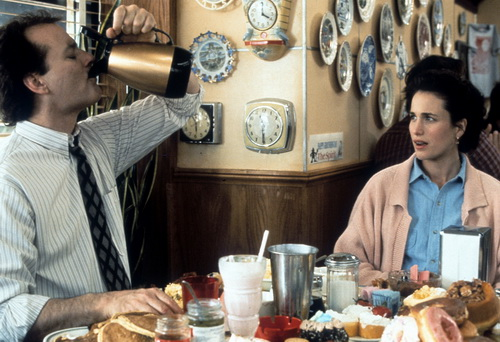
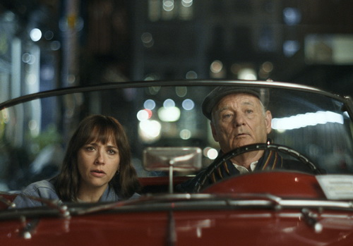
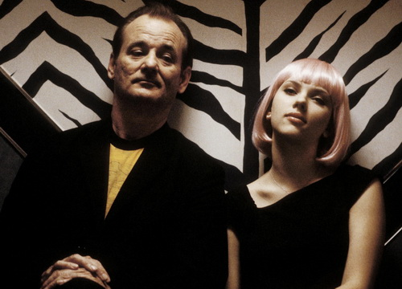
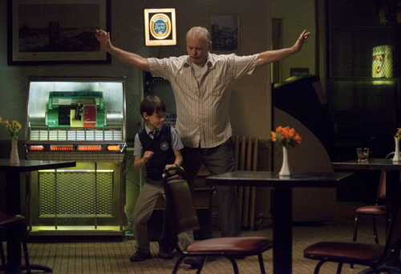

Интересные факты
Факт №1
Билл Мюррей — большой фанат картошки фри. Первый инцидент, связанный с ней, произошел в Нью-Йорке. Тогда актер подошел в кафе к незнакомцу и съел всю его картошку фри из тарелки со словами: «Тебе никто не поверит» .
Ситуация повторилась через несколько лет в аэропорту острова Мартас-Винъярд. Тогда Мюррей даже не стал макать картошку в соус.
Факт №2

Трудно в это поверить, но «Охотники за привидениями» могли бы остаться без Билла Мюррея, если бы не лента «Острие бритвы», ради финансирования которой актер согласился сниматься в культовом фильме Айвена Райтмана.
В итоге проект, где Мюррей выступил в качестве соавтора сценария и появился в амплуа драматического актера, провалился. Пережил это известие артист нелегко: тогда он отказался от съемок и вместе с семьей уехал во Францию. В университете Сорбонны Мюррей начал изучать историю и философию, особенно его интересовали труды мыслителя и мистика греко-армянского происхождения Георгия Гурджиева.
Факт №3
Во время поездки в такси Мюррей разговорился с водителем и узнал, что тот увлекается игрой на саксофоне. Когда таксист пожаловался, что находится за рулем уже почти 14 часов, актер предложил ему поменяться местами, а заодно поинтересовался, где находится музыкальный инструмент. Уже через пару минут водитель наигрывал мелодии на заднем сидении, достав саксофон из багажника, а Мюррей колесил по дороге.
Факт №4
Существует целый сайт, где люди делятся историями о том, как совершенно случайно пересеклись с Биллом Мюрреем.
В 2006 году актер решил заскочить на студенческую вечеринку в Шотландии после того, как в баре познакомился с 22-летней Ликке Ставнеф. Представьте, как удивились ребята, когда увидели среди гостей голливудскую звезду. Последующие действия Мюррея и вовсе привели их в восторг: актер не только оказался душой компании, но и перед уходом помог помыть посуду.
Факт №5
Билл является горячим сторонником принципа support your local team («Где родился — за тех и болей»). Актер является совладельцем бейсбольной команды Charleston RiverDogs, где также занимает должность директора по развлечениям.
Как-то раз матч отложили из-за дождя. Мюррей решил поддержать зрителей и веселил их до тех пор, пока игра не началась.